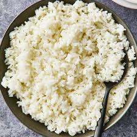

rice
Home

Description
Rice is a versatile staple food enjoyed around the world. Whether served as a side dish, the base of a hearty meal, or part of a flavorful stir-fry, rice is easy to prepare and pairs well with almost anything. From plain steamed rice to seasoned pilaf, it’s a kitchen essential perfect for both simple and elaborate dishes.
Ingrediants
- 1 cup rice (white or brown)
- 2 cups water
- 1/2 tablespoon salt (optional)
- 1 tablespoon butter or oil (optional)
Instructions
- Rinse the rice under cold water until the water runs clear.
- In a pot, bring water to a boil and add salt (if using).
- Add the rice, stir once, and reduce the heat to low.
- Cover and let it simmer for 15 minutes (white rice) or 40 minutes (brown rice).
- Turn off the heat and let the rice sit for 5 minutes.
- Fluff with a fork and serve.